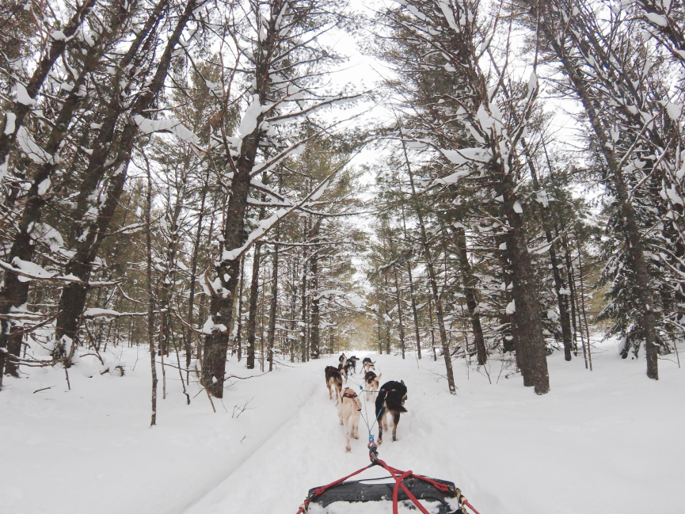
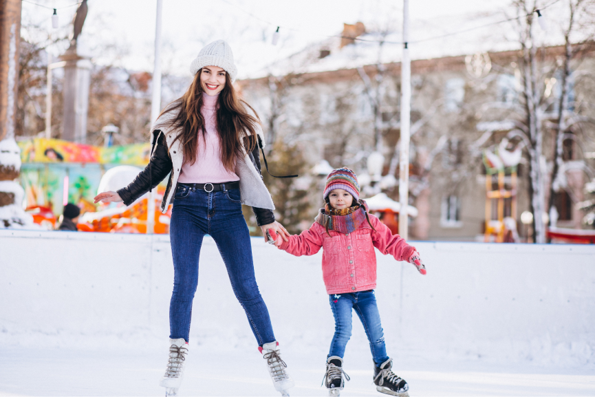
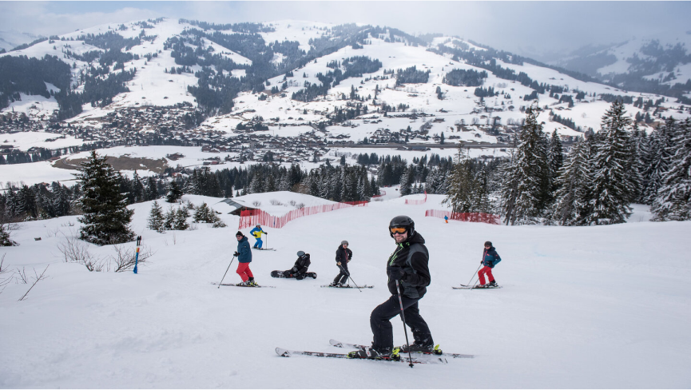
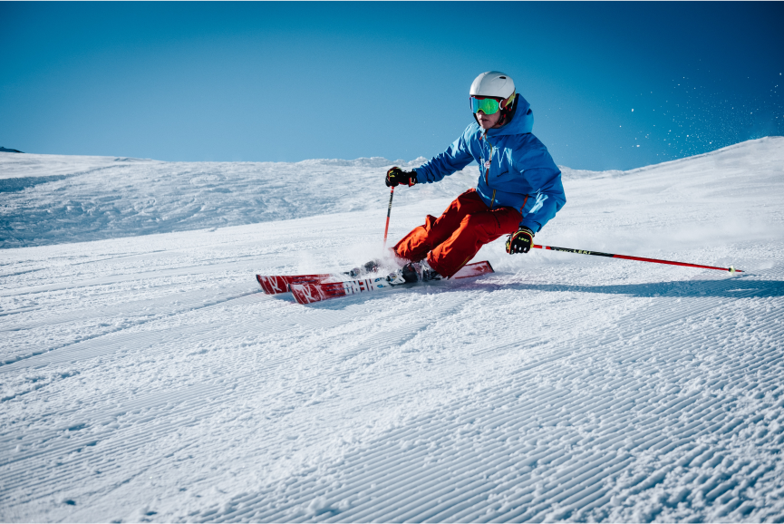

Dog Sledding
What could be better? Snow, beautiful landscapes, and dogs! Dog sledding is a fantastic way of seeing the gorgeous landscapes around you on a personal tour across snow and ice. Sliding along in a sleigh is a dreamlike experience where you can experience nature and all the wonders it has to offer up close and personal.
Ice Climbing
Ice climbing is pretty much what it says on the tin – climbing ice. Ice climbing is very similar to rock climbing and uses strong, robust ropes and crampons that you can accommodate in your travel camera bag, to ascend beautiful icefalls, frozen waterfalls, cliffs and frozen rock faces. In most resorts, you can take guided climbing lessons, which everyone can do providing you’ve got a good level of fitness. Take a look at www.myfitnesshub.com for all the gear and equipments you need for you fitness. All you have to do is get some safety equipment that’s even sturdier and more reliable than the best tennis strings and you’re all set.
Ice Skating
A fun activity with the kids, a silly activity to try after a few drinks, or a fantastic innovative date idea, ice skating is great fun for children and adults alike. However, if you’re a bit unsteady on your feet, just make sure you take a good friend you can desperately cling to!
Mountaineering
Mountaineering (otherwise known as alpinism) includes a whole host of activities, including climbing, trekking, scrambling, and even crossing glaciers. Each resort comes with its own unique terrain ready to be explored and discovered, just make sure you do your research before setting out. You can head out with someone experienced, or join a local tour group, either way, don’t go out alone if you’re a novice mountaineer.
Ice Hockey
What is snow polo? Well, it’s essentially the Swiss take on regular polo, which means the added sprinkle of natural beauty, lots of cold weather and even more cold, hard cash. The sport was born in the affluent town of St Moritz in Switzerland, which hosted the first snow polo tournament in 1985. Taking place on a frozen lake, the St Moritz Snow Polo World Cup attracts the upper crust from across the world, who wear flamboyant furs, sleep in VIP tents and sip champagne as they watch riders compete on the sweeping snowfields. Dreamy.
Ice Hockey
Ice hockey is a winter sport usually played indoors. Two teams compete by shooting a rubber puck into a goal to score. The sport is known to have hard hits and go fast, which is why anyone looking to have their adrenaline pumping will enjoy this. It is believed to have been adopted from other forms of stick games coming from Europe. It is the official winter sport of Canada.

Bandy
This type of winter sport is closely related to ice hockey. Instead of using a puck, the players throw a small ball around with sticks to reach a goal on either side. However, bandy is one of the precursors of ice hockey which is why the two sports are quite similar in form. It was even referred to as hockey in Russia and Kazakhstan. It has a version that is played in a significantly smaller court called rink bandy. In this game, they also use a bandy stick, but the goalkeeper does not use it.
Alpine Skiing
Alpine skiing is also known as downhill skiing. This is held on ice-covered mountains or artificial slopes. They use specialized skis for this activity. It has been part of the Winter Olympic Games since 1936. Modern alpine skiing was developed in the late 19th century and was a take on a method of transportation. They used the equipment to create a recreational sport and a competitive sport as well. The modification of the skis to have curved sides and bindings was introduced by Sondre Norheim, a pioneer in alpine skiing.
